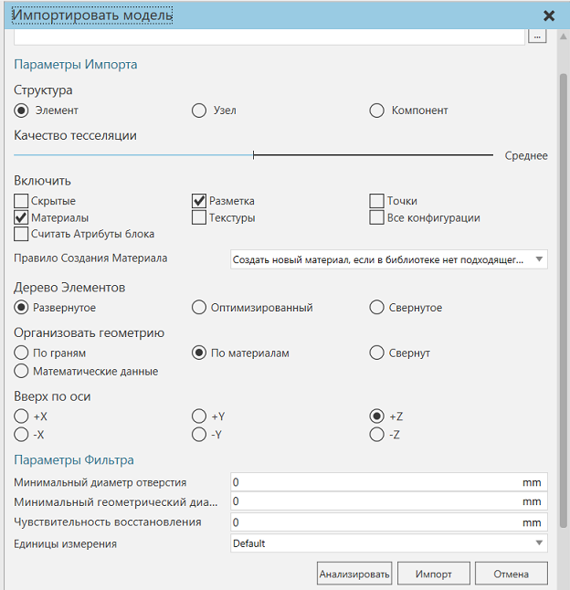

Импорт геометрии в качестве новых компонентов |
|
Файл CAD можно импортировать как новый компонент в 3D-мир. Перед импортом CAD-файла необходимо очистить геометрию файла в CAD-редакторе. Настройки импорта в Рациональное Производство могут быть использованы для очистки и устранения определенных проблем с импортированными CAD-файлами. 1.На вкладке Главная в группе Импорт нажмите Геометрия. 2.В диалоговом окне Открыть выберите и откройте файл, который вы хотите импортировать в качестве компонента.
 3.На панели задач Импорт модели выполните одно или несколько следующих действий: ·Чтобы определить уровень детализации геометрии файла, настройте ползунок Качества тесселяции. ·Чтобы включить/исключить типы данных в файл, в разделе Включить установите/снимите флажок типа данных. ·Чтобы упростить структуру модели файла, в разделе Дерево элементов выберите предпочтительный вариант. Если выбрано значение Развернутое, будет сделана попытка соответствовать структуре модели при просмотре в родном редакторе CAD. Если опция Развернутое не выбрана, структура нового компонента может отличаться от исходной модели. ·Чтобы определить способ группировки геометрии файла, в разделе Организовать геометрию выберите предпочтительный вариант. ·Для ориентации верхней и нижней частей модели файла в разделе Вверх по оси выберите предпочтительную ось и направление. ·Для соединения точек, линий и граней в геометрии файла в Чувствительность восстановления задайте значение расстояния. Обычно этот параметр используется в качестве инструмента очистки для устранения отверстий, трещин и зазоров, возникающих на гранях твердых объектов. Если значение расстояния равно нулю, очистка отключена. Если значение расстояния больше нуля, то вершины, которые соседствуют друг с другом и находятся в диапазоне, заданном значением расстояния, могут быть соединены друг с другом путем создания новой линии. ·Чтобы обработать преобразование единиц измерения для целей масштабирования, в пункте Единицы измерения выберите единицу измерения, используемую в файле. Если выбрано значение Default, предполагается, что единица измерения совпадает с единицей измерения, используемой в Рациональном Производстве. 4.Нажмите кнопку Анализировать для предварительного просмотра количества данных в файле. 5.Нажмите кнопку Импорт. Техническое: CAD-файл сначала преобразуется в формат PRC-файла, а затем считывается для создания структуры одного или нескольких новых компонентов. |